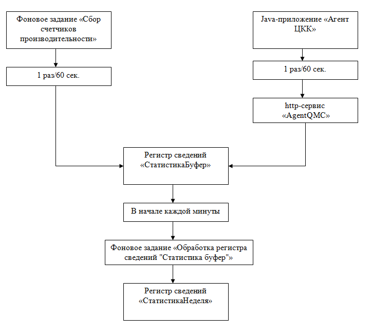

Предназначено для хранения информации об оборудовании, управлением сбором счетчиков производительности.
Сбор счетчиков производительности может осуществлять одним из двух способов: PDH или java-приложением "Агент КИП".

Сбор данных в данном случае возможен только в том случае, если фоновое задание "Сбор счетчиков производительности" выполняется на компьютере с ОС семейства Windows. Фоновое задание "Сбор счетчиков производительности" получает данные с помощью системной pdh.dll. Собранные данные раз в минуту агрегируются и записываются в регистр сведений "СтатистикаБуфер". Для каждой единицы оборудования запускается отдельное фоновое задание и выполняется в бесконечном цикле, т.е. не завершается.
Сбор данных осуществляется с помощью java-приложения "Агент КИП". Данное приложение может получать счетчики производительности как на компьютерах семейства ОС Windows, так и на компьютерах семейства ОС Linux. Собранные данные раз в минуту агрегируются, отправляются через http-сервис "AgentETP" в ИБ ЦКК и записываются в регистр сведений "СтатистикаБуфер". В случае отсутствия связи агент КИП имеет буфер для сохранения собранных данных, которые при первом же соединении с ЦКК будут отправлены. Размер буфера по умолчанию составляет 120 минут, т.е. 120 значений для каждого собираемого счетчика. Размером буфера можно управлять из ЦКК в справочнике "Агенты ЦКК".
Все собранные данные буферизируются в формате JSON в регистре сведений "СтатистикаБуфер". Для обработки этих данных предназначено фоновое задание "Обработка регистра сведений 'СтатистикаБуфер'". Данное фоновое задание выполняется в бесконечном цикле, т.е. не завершается. Обработка данных происходит в начале каждой минуты.